Această pagină a fost tradusă automat. Dacă ceva nu sună bine, vă rog să-mi spuneți.
Conseils technologiques gratuits pour Bridlington et l'East Riding
Ajutor simplu în legătură cu telefoanele, computerele și cum să te păstrezi în siguranță online. Gratuit, fără nimic de semnat.
Ultimele sfaturi

Control your phone with your voice
It's day five of National Braille Week, and today I wanted to share how you can control your phone using just your voice.

Dispraxia: ajutor pentru adulți și studenți
Este ultima zi a Săptămânii de Conștientizare a Dispraxiei, și vreau să închei împărtășind câteva susțiri pentru adulți și studenți, deoarece dispraxia nu se oprește...
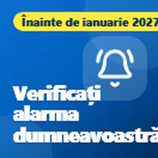
Ai un medalion sau o alarmă de cădere? Verifică acum
Vreau să împărtășesc ceva important pentru oricine are o alarmă personală, cum ar fi un medalion sau o alarmă de cădere, care funcționează prin linia telefonului de acasă.

Cărți și televiziune gratuite pe care le poți asculta
Astăzi este a patra zi a Săptămânii Braille Naționale, iar sfaturile de astăzi sunt despre cărți, radio și televiziune pe care le poți savura ascultând.

Instrumente gratuite pentru a reduce facturile de internet și telefon
Astăzi este Ziua Internațională a Eliminării Pobreții, așa că vreau să împărtășesc câteva instrumente gratuite care te pot ajuta să reduci costurile internetului...
Dispraxia: tehnologie pentru a te mișca
Astăzi este a șasea zi a Săptămânii Conștientizării Dispraxiei, iar astăzi vreau să împărtășesc o tehnologie care te ajută să te miști.
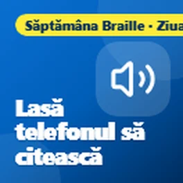
Fă telefonul să-ți citească
Astăzi este a treia zi a Săptămânii Braille Naționale, iar astăzi vreau să împărtășesc câteva modalități gratuite prin care poți face ca telefonul sau computerul tău să citească lucruri în voce pentru tine.
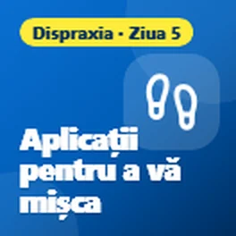
Dispraxia: aplicații pentru a te mișca
Astăzi este a cincimea zi a Săptămânii Conștientizării Dispraxiei, iar sfaturile de astăzi sunt toate despre mișcare.

Economise bani la mâncare cu telefonul tău
Astăzi este Ziua Alimentară Mondială, așa că vreau să vă împărtășor câteva aplicații gratuite care vă pot ajuta să economisiți bani la alimente și să împiedicați risiparea alimentelor bune.
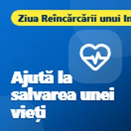
Aplicații gratuite care vă pot ajuta să economisiți o viață
Astăzi este Ziua Reîmprospătării Inima, așa că vreau să vă împărtășor câteva aplicații și site-uri gratuite care vă pot ajuta să învățați R.S.V. (Răspuns la urgențe) și să fiți pregătit să ajutați dacă inimaune persoanei se oprește.
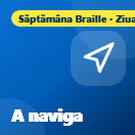
Mișcarea cu pierderea vederii
Este a doua zi a Săptămânii Mondiale a Braille-ului, iar astăzi este și Ziua Siguranței cu Canel Alb, așa că vreau să vă împărtășor câteva aplicații gratuite care ajută persoanele cu pierderea vederii...
Dispraxia: instrumente care fac cititul mai ușor
Astăzi este a patra zi a Săptămânii de Conștientizare a Dispraxiei, iar astăzi vreau să vă împărtășor câteva instrumente gratuite care fac cititul mai ușor.

Ați primit un mesaj text despre un pachet lipsă?
Vreau să vă împărtășor un avertisment despre mesaje text despre livrarea falsă a pachetului, deoarece acestea sunt una dintre cele mai comune scam-uri în acest moment.
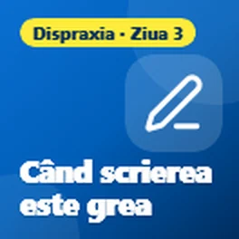
Dispraxia: când scrierea este grea
Astăzi este a treia zi a Săptămânii de Conștientizare a Dispraxiei, iar sfaturile de astăzi sunt pentru oricine găsește scrierea grea.
Ai dificultăți în a citi telefonul tău?
Această săptămână este Săptămâna Mondială a Braille-ului, așa că vreau să vă împărtășor câteva funcții gratuite pe telefonul dumneavoastră care pot face o mare diferență dacă vederbății nu este ceea ce...
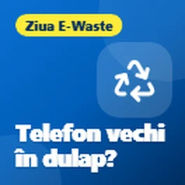
Ai un telefon sau un laptop vechi în dulap?
Astăzi este Ziua Internațională a Deșeurilor Electrice, o bună amintire despre toate cele vechi telefoane, tablete și laptopuri care stau în dulapuri. Majoritatea dintre noi avem...
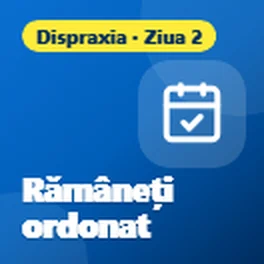
Disfraxia: instrumente pentru a te organiza
Astăzi este a doua zi a Săptămânii de Conștientizare a Dispraxiei, iar astăzi vreau să împărtășesc câteva instrumente gratuite care ajută la organizare.
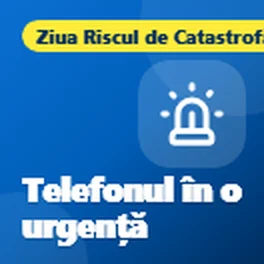
Telefonul tău te poate ajuta în urgențe
Astăzi este Ziua Internațională de Reducere a Riscului de Catastrofă, așa că vreau să împărtășesc câteva funcții ale telefonului tău care ar putea ajuta foarte mult în urgențe....
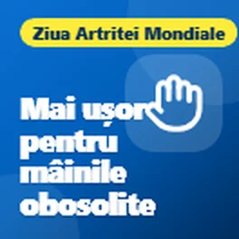
Mani obose? Lasă telefonul și laptopul să fac munca
Astăzi este Ziua Artritei, așa că vreau să împărtășesc câteva funcții ale telefonului și laptopului tău care pot face viața mult mai ușoară dacă ai mâinile dureroase, rigide sau...
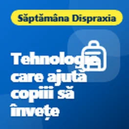
Tehnologia care ajută copiii să învețe, nu să se baze pe ea
Această săptămână este Săptămâna de Conștientizare a Dispraxiei, așa că vreau să împărtășesc câteva moduri în care tehnologia poate ajuta copiii cu dispraxia. Ideea este de a folosi tehnologia pentru a îi ajuta să...
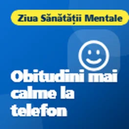
Fă telefonul tău să funcționeze pentru bunăstarea ta
Ziua Mondială a Sănătății Mentale a fost a 10 octombrie, așa că vreau să împărtășesc câteva lucruri simple pe care telefonul tău le poate face deja pentru a te simți puțin mai calm și mai...
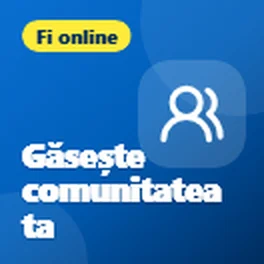
Ce îți place, există o comunitate pentru asta
Vreau să împărtășesc ceva ce mulți oameni nu realizează că există.

Anunturi care apar din când în când?
Continuând postarea mea despre anunțurile pop-up care dau spaimă, iată ce să faci dacă anunțurile apar în continuare pe telefonul tău Android chiar dacă nu folosești niciun aplicație.
Anunț pop-up care te face să te sperii pe telefonul tău? Este doar o anunț.
Voiam să împărtășesc un sfat despre acele anunțuri pop-up care apar uneori pe telefoane.
Navigația satelitului tău este actualizată?
Iată un sfat rapid pentru oricine folosește încă un sistem de navigare satelitului în mașină.

Selectat pentru Premiile Time2Volunteer 2026
Voiam să împărtășesc o notă. Am fost recent selectat pentru Premiile Time2Volunteer 2026 pentru voluntariatul pe care îl fac cu un sprijin tehnic local...
Fapte simple pentru a menține computerul tău în siguranță
Voiam să împărtășesc câteva sfaturi despre menținerea computerului tău în siguranță, deoarece mulți oameni ajung să plătească pentru antivirus pe care nu îl au de fapt nevoie.
Ce este un cod QR?
Vreau doar să împărtășesc un sfat rapid despre codurile QR.
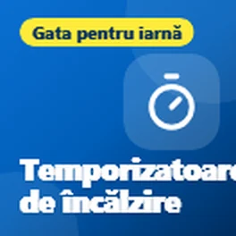
Verificați temporizatoarele de încălzire și apă fierbinte
Cu apropierea vremea mai rece, acum este un moment bun să verificați temporizatoarele de încălzire și apă fierbinte.
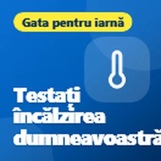
Testați încălzirea înainte de iarnă
Cu apropierea iernii, acum este un moment bun să testați încălzirea, mai ales dacă nu a fost folosită mult în acest an.
Parcurgeți sfaturi după subiect
Ce que les gens disent
Vă mulțumesc foarte mult, domnule
Da, cu siguranță util, mulțumesc. Le voi trimite oricui cred că i-ar folosi sfaturile tale 😃
Util, mulțumesc
Mai multe despre mine și aceste sfaturi
Primește sfaturi noi pe e-mail
Un e-mail scurt când public un sfat nou. Gratuit și te poți dezabona oricând.
Vei primi un e-mail de confirmare. E-mailurile sunt trimise de follow.it și fiecare are un link de dezabonare.